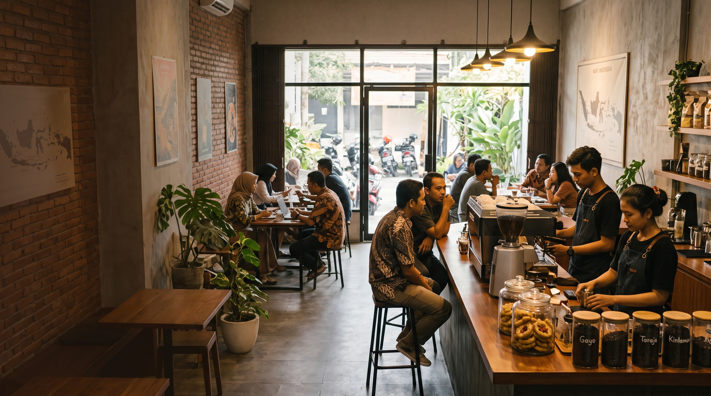
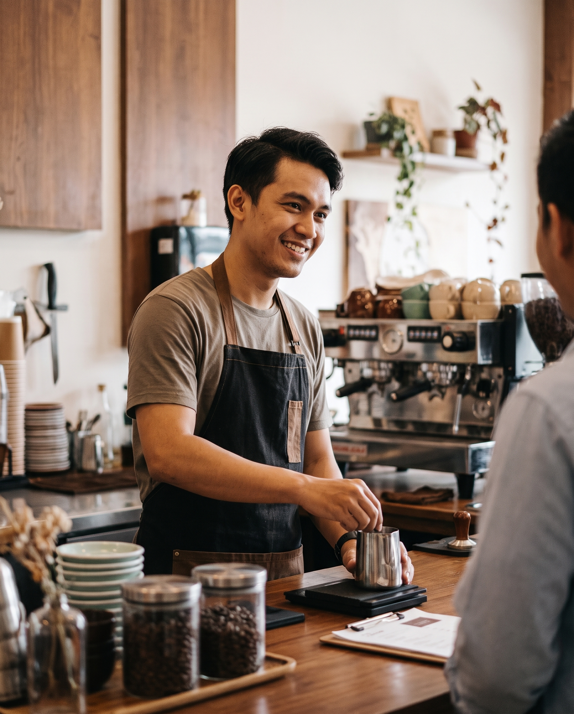

Biji Pilihan
Dipilih langsung dari petani lokal.

Jelajahi pilihan biji kopi buatan tangan, diseduh dengan teliti sampai rasanya pas.
Pesan SekarangTemukan racikan paling populer yang disukai para pencinta kopi.

Di Hiro Cafe, kami percaya setiap cangkir kopi punya cerita. Biji kopi kami dipilih dari petani lokal dan disangrai dalam jumlah kecil supaya rasanya selalu segar.
Entah kamu penikmat espresso sejati atau hanya ingin kopi enak setelah kuliah, selalu ada racikan yang cocok untukmu.
Tim Hiro Cafe
Dipilih langsung dari petani lokal.
Disangrai dalam jumlah kecil setiap minggu.
Pesanan sampai dengan kemasan yang aman.